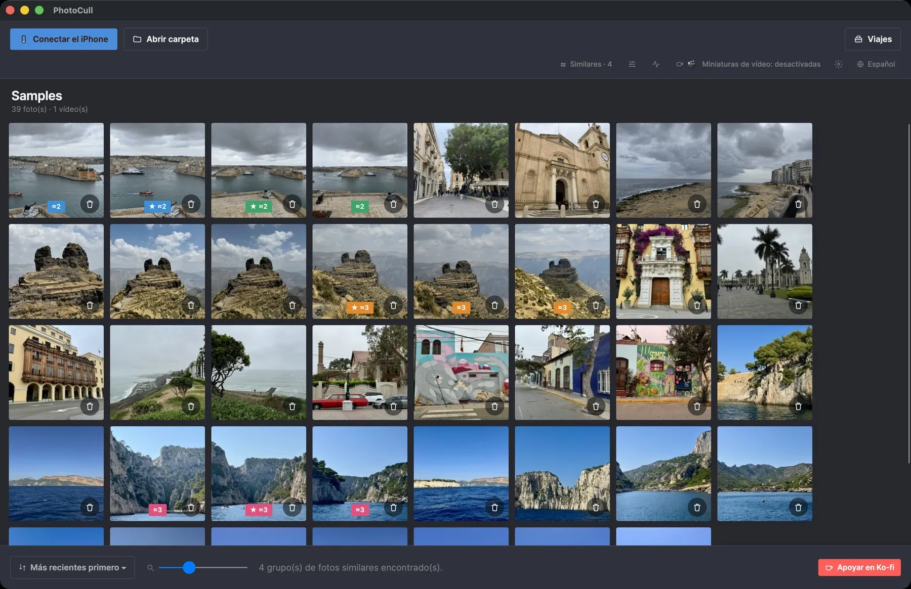
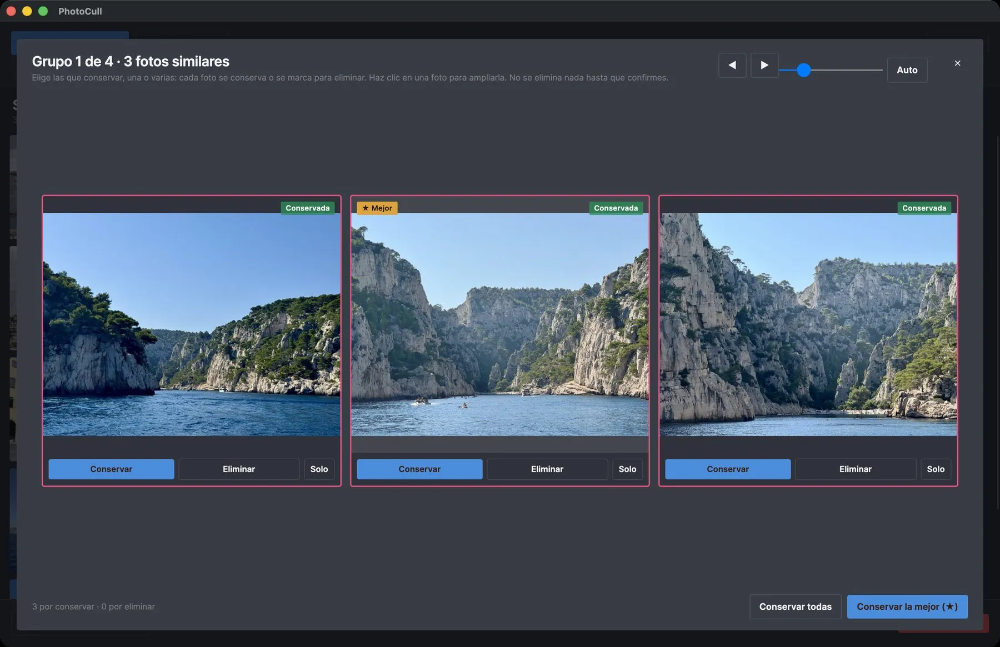
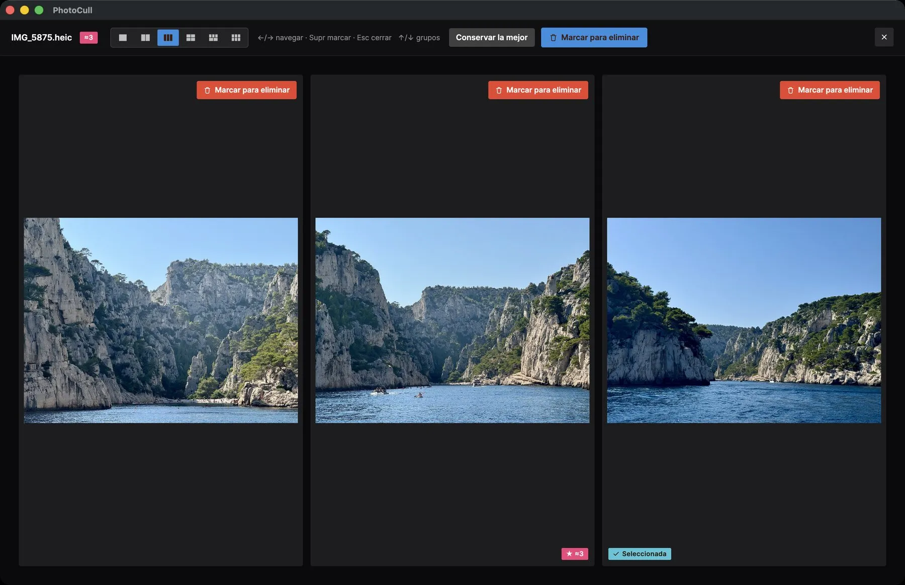
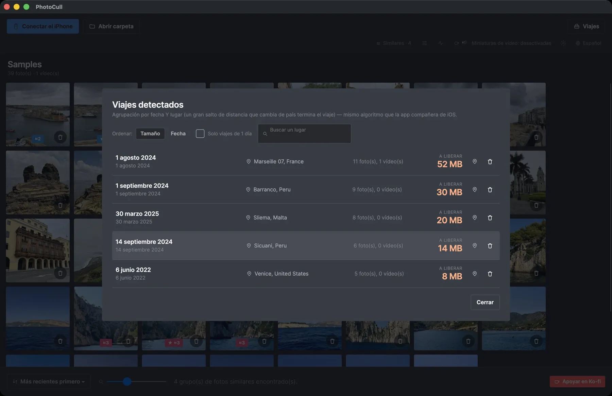
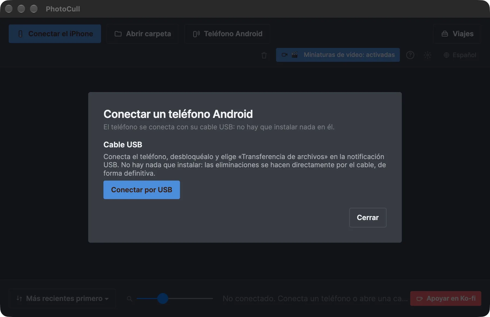

Ordena miles de fotos de iPhone y Android en tu Mac o PC
PhotoCull es una aplicación de escritorio completa: muestra todo el carrete de tu iPhone o teléfono Android agrupado por estancia, compara tus fotos una junto a otra y elimina en masa lo que ya no vale la pena conservar — directamente desde tu Mac o PC.

Un vistazo a la app




Conecta tu teléfono en un minuto
En el primer inicio, PhotoCull pregunta dónde están tus fotos y te guía paso a paso.
iPhone, por USB
Mac y Windows. Conecta el iPhone, desbloquéalo y toca «Confiar», luego haz clic en «Conectar el iPhone». En Windows, instala antes la app gratuita Dispositivos Apple.
Android, por USB
Windows, y Mac con macOS 27 o posterior. Desbloquea el teléfono, conéctalo y elige «Transferencia de archivos» en su notificación USB, luego haz clic en «Teléfono Android» y «Conectar por USB». Nada que instalar en el teléfono.
Una carpeta
Cualquier carpeta de tu ordenador o de un disco: haz clic en «Abrir carpeta» o arrástrala a la ventana. Sin teléfono, sin límite diario.
Qué hace la app
Vista "Viajes / estancias"
Toda tu biblioteca de fotos agrupada automáticamente por estancia (tiempo Y lugar) — detecta de un vistazo los viajes que ocupan más espacio.
Comparación lado a lado
Muestra hasta 6 fotos similares a la vez para elegir la mejor — ideal para ordenar ráfagas y casi duplicados.
Eliminación en masa, con total seguridad
Marca cientos de fotos en pocos clics. En un iPhone o un teléfono Android, PhotoCull las elimina directamente por el cable USB y guarda por defecto una copia en tu ordenador durante 30 días; en una carpeta, van a la Papelera. Detalles y condiciones más abajo.
El tamaño que importa
Ordena y filtra por estancia de 1 día, por lugar excluido (casa, trabajo...), por tamaño — filtros pensados para ir rápido.
Conexión directa con el teléfono
Conecta tu iPhone o tu teléfono Android con un cable USB: PhotoCull lee tu carrete directamente, sin nube ni servidor.
100 % en el dispositivo
Ninguna foto ni ubicación GPS se envía nunca a ningún sitio. El reconocimiento de lugares funciona completamente en local, sin cuenta ni suscripción.
Gratis, de verdad
Sin suscripción, sin compras integradas, sin cuenta.
PhotoCull
0 $
Explora, compara, ordena y elimina, en un iPhone, un teléfono Android o una carpeta, sin límite diario. Mac y Windows.
PhotoCull funciona solo: ninguna otra app que comprar ni instalar.
Eliminar desde el ordenador: iPhone y Android
iPhone: PhotoCull elimina las fotos directamente por el cable USB, sin límite diario y sin nada que comprar. Funciona en cualquier PC con Windows 10/11 y en un Mac con macOS 27 o posterior, con Fotos en iCloud desactivado en el iPhone (cuando está activado, Apple no permite esta eliminación: desactívalo en Ajustes > [tu nombre] > iCloud > Fotos, o elimina en la app Fotos del iPhone). La eliminación es inmediata y definitiva en el iPhone: las fotos no pasan por « Eliminados recientemente ». Por defecto, PhotoCull guarda durante 30 días una copia de cada elemento eliminado en tu ordenador, en una carpeta « PhotoCull Trash » dentro de Imágenes, de modo que un error se puede deshacer importando de nuevo el archivo. Con macOS 26 o anterior, PhotoCull muestra y ordena las fotos del iPhone pero no puede eliminarlas: un aviso en la app lo indica, y las eliminas en la app Fotos del iPhone.
Android: PhotoCull también elimina las fotos directamente por el cable USB, en cualquier PC con Windows 10/11 y en un Mac con macOS 27 o posterior, sin nada que instalar en el teléfono. La eliminación es inmediata y definitiva (las fotos no pasan por la papelera del teléfono), con la misma copia de 30 días en el ordenador. En las carpetas del Mac o del PC, los archivos van a la Papelera.
Guías para ordenar tus fotos en el ordenador
Cómo ordenar las fotos del iPhone en el Mac
Ordena miles de fotos del iPhone en tu Mac: qué hacen Fotos y Captura de Imagen, y una forma más rápida de agrupar, comparar y borrar.
Cómo ordenar las fotos del iPhone en un PC con Windows
Ordena miles de fotos del iPhone en Windows 10 u 11: qué muestran la app Fotos y el Explorador, y una forma más rápida de ordenar y borrar.
Cómo ordenar miles de fotos más rápido en un Mac o un PC
Por qué ordenar fotos en una pantalla grande es mucho más rápido que en el móvil, y un método sencillo para repasar miles de fotos en una sola sesión.
Cómo liberar espacio en el iPhone desde un Mac o un PC con Windows
Conecta tu iPhone, ordena fotos en una pantalla grande y borra lo que no necesitas, sin iCloud y sin enviar nada a internet.
Cómo comparar fotos parecidas y quedarte con la mejor
Una rutina sencilla para elegir la mejor toma entre fotos casi idénticas: en qué fijarte y cómo hacerlo rápido en una pantalla grande.
Cómo buscar fotos duplicadas y parecidas en un Mac
Encuentra copias exactas, ráfagas y tomas casi idénticas en las carpetas de tu Mac o en un disco externo, conserva la mejor y manda el resto a la Papelera.
Cómo buscar fotos duplicadas y parecidas en Windows 10 u 11
Encuentra copias exactas, ráfagas y tomas casi idénticas en tu PC o en un disco externo, conserva la mejor y manda el resto a la Papelera de reciclaje.
Cómo ordenar una carpeta enorme de fotos, o un disco externo entero
Copias antiguas, tarjetas de cámara, un disco externo lleno: un método sencillo para ordenar miles de fotos por viaje, quitar casi copias y conservar lo mejor.
Cómo ordenar las fotos de Android en un Mac
A un Mac siempre le ha costado leer los móviles Android por USB. Cómo ordenar miles de fotos de Android en un Mac con macOS 27 y borrar lo que no necesitas.
Cómo ordenar las fotos de Android en un PC con Windows
Ordena miles de fotos de Android en Windows 10 u 11: qué muestran el Explorador y la app Fotos, y una forma más rápida de agrupar y borrar.
Cómo liberar espacio en tu móvil Android desde un Mac o un PC
Conecta tu móvil Android por USB, ordena las fotos en una pantalla grande y borra lo que no necesitas, sin pagar Google One y sin subir nada.